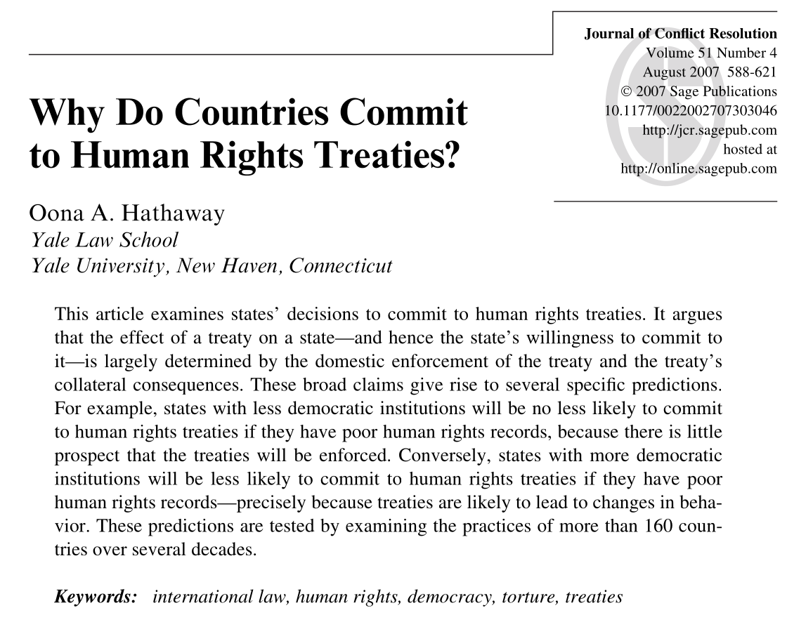
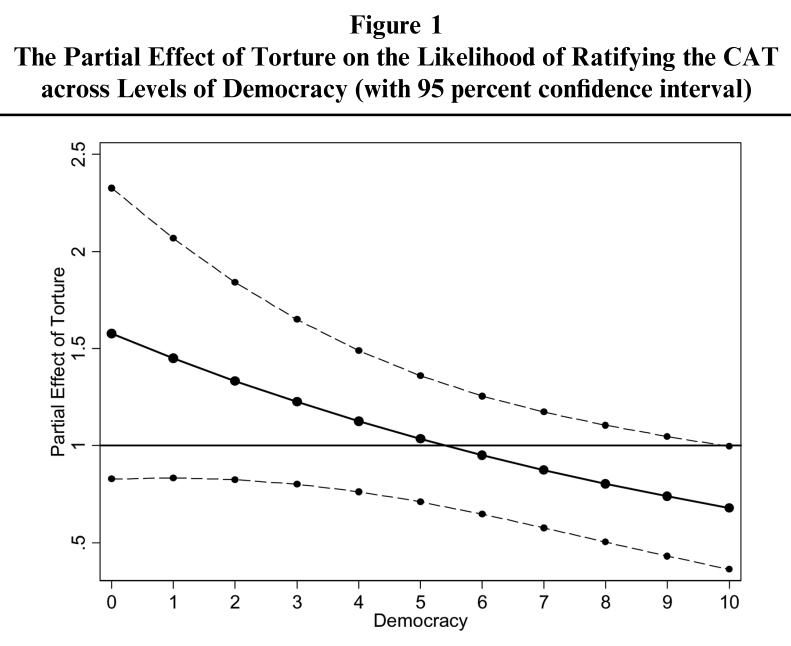
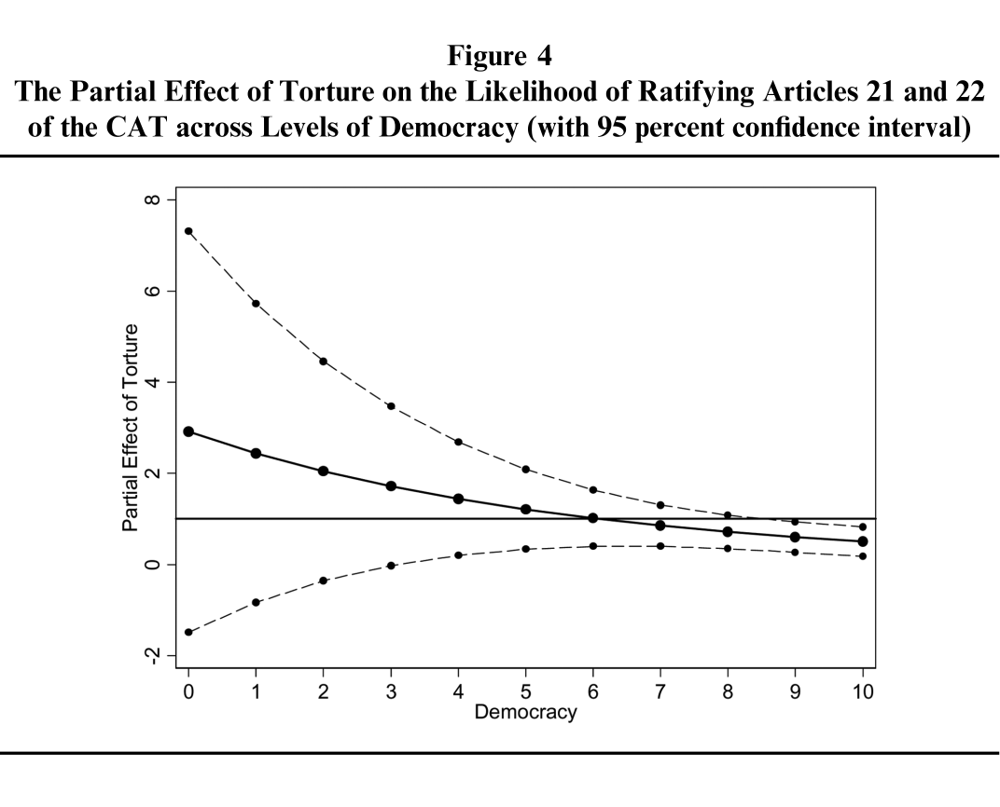
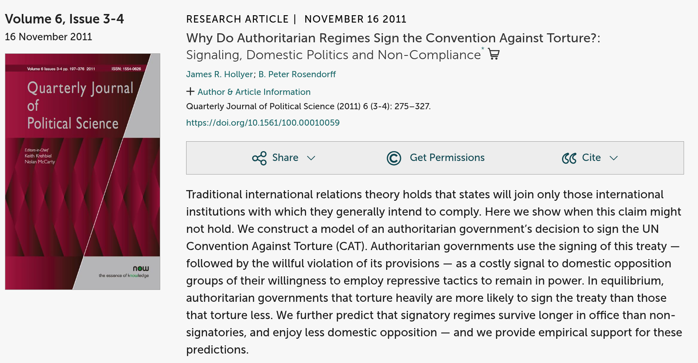
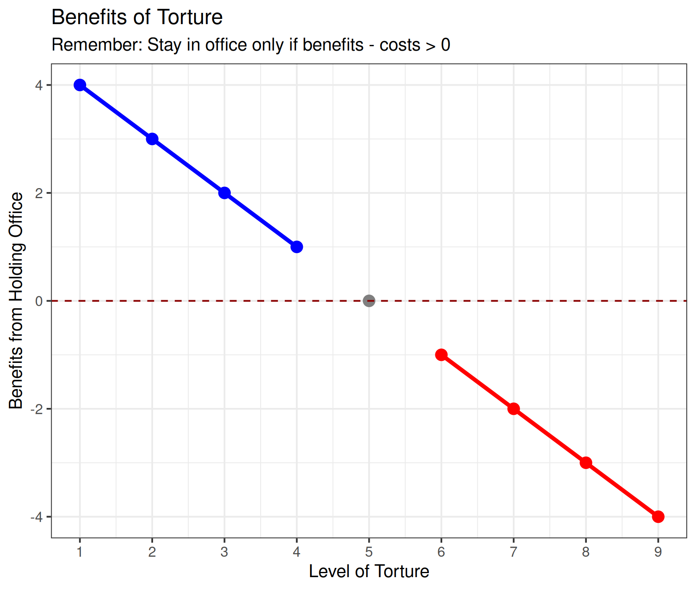
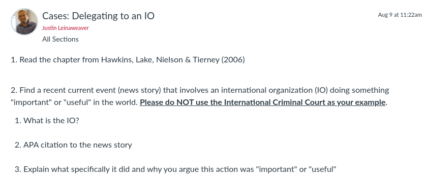

Today’s Agenda
Section 2: How effective have international institutions been in reducing the use of torture by governments around the world?
- Hollyer & Rosendorff (2011) “Why Do Authoritarian Regimes Sign the Convention Against Torture? Signaling, Domestic Politics and Non-Compliance”
Justin Leinaweaver (Fall 2026)
How effective have international institutions been in reducing the use of torture by governments around the world?
Week 6: Defining and Measuring the Outcome
Week 7: The Convention Against Torture (CAT)
Week 8: Explaining the Effect of the CAT on Torture
Week 9: The International Criminal Court (ICC)
Week 10: Can the ICC help us reduce global torture?
Week 11: Case Studies of ICC Effectiveness

Hathaway (2007): The Model
Interests:
- States will join human rights treaties whose benefits outweigh their costs
Institutions
Interactions
Domestic enforcement capacity matters for costs and benefits
Domestic collateral consequences matter for costs and benefits
Transnational collateral consequences matter for costs and benefits



[H&R’s Formal Model: Actors]
[H&R’s Formal Model: Interests]
[H&R’s Formal Model: Interactions]
Each round the government survives based on the level of torture and opposition effort applied:
\(\pi(t,e) = \frac{t}{t+e}\)
\(\pi(t,e) = \frac{t}{t+e}\)
\(\pi(t,e) = \frac{t}{t+e}\)
\(\pi(t,e) = \frac{t}{t+e}\)
\(\pi(t,e) = \frac{t}{t+e}\)

[H&R’s Formal Model: Costs vs Benefits]
[H&R’s Formal Model: Costs vs Benefits]
[The Convention Against Torture (CAT) (1984)]
[Per Hollyer & Rosendorff (2011), has the CAT been effective?]
[Has the CAT reduced torture?]
Hathaway (2007) “Why Do Countries Commit to Human Rights Treaties?”
Vreeland (2008) “Political Institutions and Human Rights: Why Dictatorships Enter into the United Nations Convention Against Torture”
Hollyer & Rosendorff (2011) “Why Do Authoritarian Regimes Sign the Convention Against Torture? Signaling, Domestic Politics and Non-Compliance”
For Next Class
